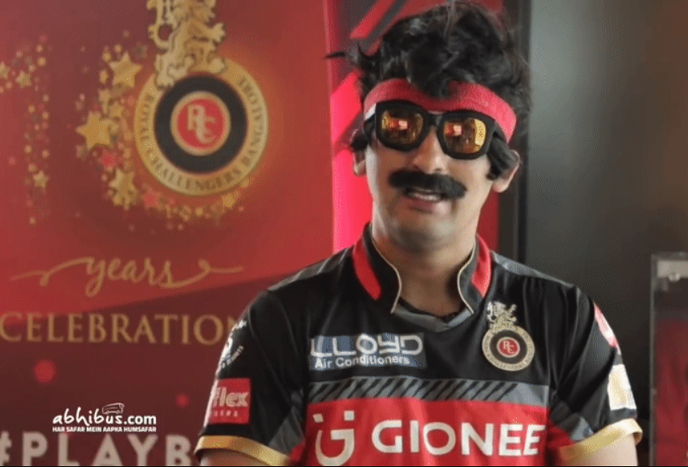
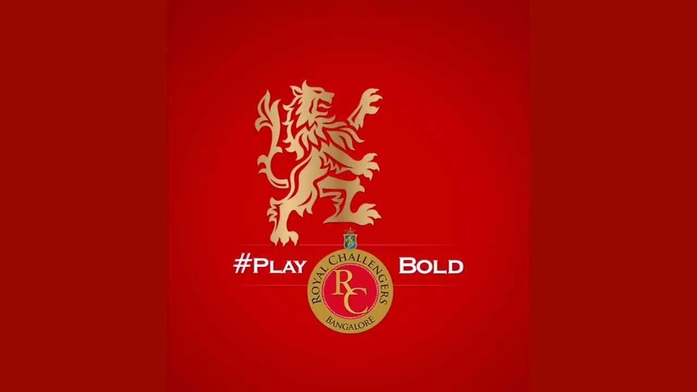

DANIIH SAIT

About Mr.Nags
☛ Dansih Sait born on 1 July 1988 is anStand-up comedian ,Television host ,Radio jockey, Actor and Writer.
☛ Danish Sait worked as a radio jockey for Supari on Fever 104 FM in 2013. On the channel, he made several prank calls and enacted an array of fictional roles including Asgar, Chacko, Nagesh and Nagraj. He is also a stand-up comedian and is a part of the Bengaluru-based comedy group The Improv.
Early Life
☛He was born on 1st February 1987 in Bangalore, Karnataka, India.☛ He started his career as a radio jockey and worked with several radio stations such as Radio Indigo, Fever 104 FM, and Red FM. He gained popularity with his prank calls and became a household name in Bangalore.
Carrer
☛ Starting in 2014, he hosted several sports shows including Pro Kabaddi League and the Cricket World Cup in 2015 before hosting Neevu Bhale Khiladi, a reality television show on Star Suvarna☛ In 2014, he made his acting debut with the Kannada film "Humble Politician Nograj," which he also co-wrote and co-produced. The film received critical acclaim and established Danish as a talented actor and writer. The film released to positive reviews with one critic stating that "Danish Sait never fails to draw the audience, irrespective of where and how he plans to entertain. What is appealing is that he remains true to the character of Nograj "
☛ He has since acted in several Kannada films such as "Chamak," "Brahmachari," and "French Biriyani," among others. He has also appeared in a few Hindi films, including "Go Goa Gone" and "Sardaar Gabbar Singh."
DANISH AS HOST
| YEAR | TITLE | ROLE | CHANNEL |
|---|---|---|---|
| 2014 | WOW Awards Pro Kabaddi League Season 1 |
HOST | Zoom TV Star Sports |
| 2015 | The Live Quotient Awards Cricket World Cup The RCB Insider Series Pro Kabaddi League Season 2 |
HOST | Zoom TV Star Sports Star Sports Star Sports Star Sports |
| 2015-16 | Neevu Bhale Khiladi | HOST | Star SuvarnaCHANNEL |
| 2016 | The RCB Insider Series | HOST | Star Sports |
| 2017 | 62nd Filmfare Awards The RCB Insider Series |
HOST | Sony Entertainment Star Sports |
| 2017 | Cricbuzz Live on Cricbuzz | HOST | Star Sports |
☛Danish is also known for his work on digital platforms. He has hosted several web shows and podcasts, including "Wake Up With Dan," "Das Ka Dum," and "The Empowering Series."
☛Danish is highly regarded for his comedy and is known for his ability to make people laugh.
Achievements
☛ Outlook Social Media Awards "Breakout Star of the Year"☛ Wow Awards Asia: Live Quotient Awards "Best Master of Ceremonies for Corporate & Lifestyle Events - Male"
☛8th South Indian International Movie Awards "Best Debutant Actor (for Humble Politician Nograj)"
☛He has been nominated for 10th South Indian International Movie Awards for the BEST ACTOR for FRENCH BIRYANI.
☛He has been a part of Royal Challenegers Bengalore since the beginnig of IPL.
